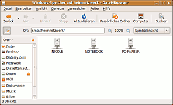
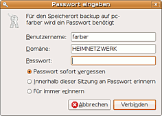
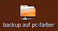
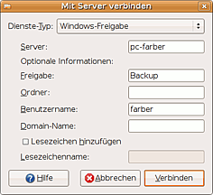

Samba Client GNOME
Dieser Artikel wurde für die folgenden Ubuntu-Versionen getestet:
Ubuntu 14.04 Trusty Tahr
 Dieser Artikel bezieht sich in erster Linie auf die Desktop-Umgebungen GNOME, ist aber in weiten Teilen auch für MATE, Unity, Xfce (Xubuntu) und LXDE (Lubuntu) gültig. Für KDE (Kubuntu) gibt es einen eigenen Artikel Samba Client/KDE.
Dieser Artikel bezieht sich in erster Linie auf die Desktop-Umgebungen GNOME, ist aber in weiten Teilen auch für MATE, Unity, Xfce (Xubuntu) und LXDE (Lubuntu) gültig. Für KDE (Kubuntu) gibt es einen eigenen Artikel Samba Client/KDE.
Mit GNOME, MATE und Unity kann man ohne die Installation irgendwelcher zusätzlicher Pakete das Netzwerk nach Windows- und Samba-Freigaben durchsuchen (browsen), diese mit dem Dateimanager Nautilus bzw. Caja anzeigen und auf sie wie auf lokale Dateien zugreifen. Dafür verwendet GNOME das gleiche virtuelle Dateisystem GVFS, mit dem auch der Zugriff auf Freigaben anderer Dienste wie z.B. FTP, SSH (SFTP) oder WebDAV (nicht jedoch NFS) erfolgt. Weitere Einzelheiten zum GVFS finden sich im Artikel gvfs-mount.
Das GVFS ist in Ubuntu keineswegs die einzige Möglichkeit, auf Windows- und Samba-Freigaben zuzugreifen. Wegen seiner einfachen Handhabung eignet es sich vor allem für Netzwerke mit wechselnden Teilnehmern und für sporadisch Benutzerfreigaben, die man häufiger ein- und wieder aushängen möchte. Bei Freigaben, die ständig auf dem Client verfügbar sein sollen, kann es vorteilhaft sein, diese mit dem cifs-vfs fest in das Dateisystem des Client einzubinden (zu mounten). Dies ist im Artikel Samba Client cifs beschrieben.
Ab der Version 1.1.0 (in Xubuntu ab Version 11.04) bietet auch der in Xfce verwendete Datei-Browser Thunar die Möglichkeit, auf Netzwerk-Freigaben zuzugreifen und sogar im Netzwerk zu browsen. Eventuell muss dazu noch folgendes Metapaket nachinstalliert werden:
gvfs-backends
 mit apturl
mit apturl
Paketliste zum Kopieren:
sudo apt-get install gvfs-backends
sudo aptitude install gvfs-backends
Auch mit dem in Lubuntu unter LXDE standardmäßig verwendeten Datei-Browser PCManFM kann man (ab Version 0.9.8) auf Netzwerk-Freigaben direkt zugreifen.
Unabhängig vom jeweils verwendeten Dateibrowser bietet auch das sehr vielseitige graphische Tool Gigolo die Möglichkeit, über das GVFS im Netzwerk zu browsen und auf Freigaben zuzugreifen. Außerdem erlaubt es Gigolo, auf einfache Weise Lesezeichen für Freigaben einzurichten und sich mit diesen auf Wunsch auch automatisch zu verbinden.
Die volle Funktionalität des cifs-Protokolls und die Gesamtzahl der Optionen – vor allem auch die Unterstützung der cifs-UNIX-Extensions – stehen allerdings nur dann zur Verfügung, wenn man die Freigaben mit dem cifs-vfs ins lokale Dateisystem des Client einbindet (mountet). Dies ist im Artikeln Samba Client cifs (allgemein) beschrieben.
Das Netzwerk durchsuchen (browsen)¶

Im Hauptmenü befindet sich der Eintrag
"Orte -> Netzwerk".
Über diesen gelangt man zu einem Fenster, in dem die verfügbaren Arbeitsgruppen und Server angezeigt sind. Klickt man diese an, erscheinen in einem Nautilus-Fenster die auf dem jeweiligen Server verfügbaren Freigaben. Dabei werden auch Samba-Freigaben im "Windows-Netzwerk" angezeigt.
Öffentliche Freigaben¶
Auf öffentlichen Freigaben (Gast-Zugang gestattet) kann man ohne weitere Umstände weiter navigieren, wie wenn es sich um Ordner und Dateien des lokalen Dateisystems handeln würde. Nautilus greift auf diese automatisch als Gast unter dem Benutzernamen "nobody" zu, für den kein Samba-Passwort festgelegt ist.

Geschützte Freigaben¶
Klickt man hingegen eine geschützte Freigabe (Gast-Zugang nicht gestattet) an, erscheint ein Dialogfenster, mit dem man nach Benutzername (standardmäßig wird zunächst der Name des eingeloggten Benutzers vorgeschlagen) und Samba-Passwort (nicht unbedingt identisch mit dem System-Passwort) gefragt wird. In einem Netzwerk ohne Domänen-Struktur wird das Feld "Domäne" ignoriert. Man kann es dann frei lassen oder den Namen der Arbeitsgruppe eintragen.
Jeder, der das Samba-Passwort eines anderen Benutzers kennt, kann auch mit dessen Identität die Verbindung herstellen und sich so z.B. Zugriff zu dessen freigegebenem Heimverzeichnis verschaffen. Man sollte deshalb unbedingt darauf achten, sein Samba-Passwort nicht leichtfertig oder versehentlich preiszugeben.
Hinweis:
Die mit Windows 7 eingeführten und auch von Windows 8 unterstützten Heimnetzgruppen funktionieren ausschließlich in Windows 7 ff. Sofern ein Windows-Host zu einer Heimnetzgruppe gehört, muss man diese verlassen, damit die Freigaben unter Linux sichtbar werden.

Verbindung lösen¶
Sobald die Verbindung zu der Freigabe hergestellt ist, erscheint auf dem Desktop das nebenstehende Netzwerkordner-Ikon. Auch wenn das Auswahlfenster geschlossen wird, bleibt die Verbindung zu der Freigabe bestehen. Man kann über dieses Ikon immer wieder ohne erneute Eingabe des Passworts auf die Freigabe zugreifen. Um die Verbindung zu der Freigabe wieder zu lösen, muss man nach einem Rechtsklick auf dieses Ikon "Datenträger aushängen" auswählen.
Hinweis:
Bei anderen Dateimanagern kann die Handhabung eingehängter Freigaben unterschiedlich sein. So erscheinen z.B. bei dem in Xubuntu standardmäßig verwendeten Dateimanager Thunar eingehängte Freigaben nicht auf dem Desktop, und beim Schließen des Browser-Fensters werden sie auch automatisch wieder ausgehängt.
Beim Beenden der jeweiligen Sitzung (Benutzerwechsel, Herunterfahren (Shutdown) oder Neustart (Reboot)) werden über gvfs eingehängte Freigaben automatisch wieder ausgehängt.
Hinweis:
Nach Veränderungen im Netzwerk (neuer Server, neue Freigaben) kann es bis zu einige Minuten dauern, bis das Browsen im Netzwerk wieder funktioniert.
Direkter Zugriff über die Adresszeile¶
Kennt man den Namen des Servers oder der Freigabe, mit der man eine Verbindung herstellen möchte, kann man sich das Browsen im Netzwerk und das Durchklicken zur Freigabe ersparen. Man öffnet ein beliebiges Nautilus-Auswahlfenster. Falls die Adresszeile nicht sichtbar ist, klickt man das kleine Symbol links oben an oder tippt man das Tastenkürzel Strg + L ein. Dann gibt man folgende Adresszeile ein:
" smb://<Rechnername> "
(<Rechnername> steht für den Namen des Servers) bzw.
" smb://<Rechnername>/<Freigabe> "
Im Auswahlfenster erscheint nun der Server oder gleich die gesuchte Freigabe. Statt des Servernamens kann man auch die IP-Adresse des Servers eingeben. Hiervon macht man vor allem dann gerne Gebrauch, wenn Probleme mit der Namensauflösung auftreten (s.u.)
Beim Erstellen von allgemeinen Samba-Freigaben kann man festlegen, dass diese beim Browsen nicht angezeigt werden (siehe hierzu z.B. Samba Server GNOME). Gleiches gilt auch für Windows-Freigaben, wenn deren Name mit dem Zeichen $ beginnt. Auch auf solche Freigaben kann man mit Nautilus zugreifen, wenn man ihren Namen in die Adresszeile eingibt.
Hinweis:
Auf öffentliche Freigaben (mit erlaubtem Gastzugang) greift Nautilus (genau wie Windows) grundsätzlich als Benutzer "nobody" zu; dabei unterbleibt die Passwort-Abfrage. Möchte man auf eine öffentliche Freigabe mit Benutzername und Passwort zugreifen (z.B. weil nur dafür Schreibrechte eingeräumt sind), so muss man dies über "Verbindung zu Server" tun.
Verbindung zu Server¶
 Eine andere Möglichkeit, mit dem gvfs auf Windows- oder Samba-Freigaben zuzugreifen, bietet folgender Eintrag im Hauptmenü:
"Orte -> Verbindung zum Server "
Wählt man nun "Windows-Freigabe", kommt man zum nebenstehenden Dialogfenster.
Obwohl "Freigabe" unter "Optionale Informationen" aufgeführt ist, muss auch dieses Feld immer ausgefüllt werden; die Verbindung zu einem Server ohne Angabe einer Freigabe funktioniert nicht. Dagegen dürfen das Feld "Ordner" und in Netzwerken ohne Domain-Struktur auch das Feld "Domain-Name" frei bleiben.
Der wichtigste Unterschied zum Zugriff über die Adresszeile eines Nautilus-Fensters ist, dass man nun auch bei öffentlichen Freigaben die Möglichkeit hat, Benutzername und Passwort einzugeben und so persönlich und nicht nur als Gast "nobody" auf die Freigabe zuzugreifen. Dies kann deshalb sehr nützlich sein, weil man bei Freigaben nicht immer den Gästen alle Rechte einräumen möchte (z.B. keine Schreibrechte).
Auch auf diese Art hergestellte Verbindungen sind temporär. Sie können wie oben beschrieben gelöst werden und werden auch beim Beenden der jeweiligen Sitzung automatisch wieder ausgehängt. Wie man Freigaben mit cifs statisch (dauerhaft) in das lokale Dateisystem des Client einbinden kann, ist hier beschrieben.
Einschränkungen und Alternativen¶
Dateiattribute und Zugriffsrechte¶
Das GVFS unterstützt nicht alle Optionen, die das von Samba verwendete Protokoll cifs (vormals smb) bietet. So werden z.B. die cifs-UNIX-Erweiterungen nicht unterstützt, mit denen sich bei reinen UNIX- bzw. Linux-Systemen Dateiattribute sowie Besitz- und Zugriffsrechte zwischen Server und Client synchronisieren lassen.
Problembehebung¶
Eine Anwendung kann nicht auf die Freigabe zugreifen¶
Die meisten, aber leider nicht alle Anwendungsprogramme kommen inzwischen mit der vom gvfs verwendeten Syntax der Form
smb://<Rechnername>/<Freigabe>
zurecht. Einige Programme (z.B. der Musik-Spieler Amarok) benötigen jedoch eine POSIX-konforme Adresse (ohne Doppelslash und Doppelpunkt). Für solche Programme bietet GNOME als "Schleichweg" den versteckten Ordner ~/.gvfs im Heimverzeichnis des jeweiligen Benutzers und danach an. In diesem sind alle mit gvfs eingebundenen Freigaben aufgeführt und für alle Programme zugänglich. Versucht man allerdings, in diesem Ordner zu navigieren, schaltet Nautilus gleich wieder auf die Standard-Syntax smb://... um.
Hinweis:
Seit Ubuntu 12.10 wird der versteckte Ordner ~/.gvfs im Heimverzeichnis des jeweiligen Benutzers nicht mehr angelegt. Statt dessen findet man die über gvfs eingebundenen Ordner und Dateien im Verzeichnis /run/user/BENUTZERNAME/gvfs bzw. seit Ubuntu 14.04 /run/user/BENUTZER-UID/gvfs. Wegen des komplizierten Pfads empfiehlt es sich, bei Bedarf mit Symlinks zu arbeiten.
Beim Browsen werden nicht alle Server angezeigt¶
Wenn beim Browsen nicht alle Server angezeigt oder Server nicht gefunden werden, wenn man ihren Namen in der Adresszeile des Dateimanagers eingibt, sind ganz verschiedene Ursachen möglich.
Hinweis:
Bei Windows 7 und 8 muss man aus der "Heimnetzgruppe" austreten, sonst sieht Linux den Rechner nicht.
Fehler in der Domänen-Struktur¶
Wenn das (Windows-)Netzwerk in Domänen aufgeteilt ist, kann es sein, dass der Samba-Client fehlerhaft eingebunden ist. Hierauf näher einzugehen, würde den Rahmen dieses Artikels sprengen. Weitere Hinweise finden sich in Samba Server PDC und Samba Winbind.
Fehler bei der Namensauflösung¶
Der Zugriff auf einen Server findet in Samba über dessen IP-Adresse statt. Servernamen müssen von Samba aufgelöst, d.h. ihre IP-Adresse muss ermittelt werden. Hierzu fragt Samba standardmäßig zuerst bei den vorhandenen Namens-Servern (DNS-Server, Datei hosts, WINS-Server) nach, ob der Name bekannt ist, und leitet erst bei Fehlmeldung einen Rundspruch (Broadcast) im Netz ein. Windows geht hingegen umgekehrt vor.
Manche Internet-Provider bzw. ihre DNS-Server leiten in unfairer Weise auf eine Seite mit Werbung um, sobald die angeforderte Adresse unbekannt ist. Dadurch wird die Namensauflösung in Samba vereitelt. Auch sogenannte "Navigationshilfen"  (Ergänzungen unvollständiger URLs) können die Namensauflösung in Samba stören.
(Ergänzungen unvollständiger URLs) können die Namensauflösung in Samba stören.
Lösungen¶
Wenn möglich, im Kundencenter des Providers "Navigationshilfen" ausschalten. Sonst:
"Insider" können mit Root-Rechten in der Datei /etc/samba/smb.conf des Client die Zeile
name resolve order = lmhosts host wins bcast
so abändern, dass
lmhosts hosterst hinterbcaststeht. Ist die Zeile mit einem vorangestellten Semikolon deaktiviert, so muss man dieses entfernen.Wenn man die IP-Adresse des Servers kennt und auf das Browsen im Netzwerk verzichten kann, kann man in der Adresszeile des Dateimanagers statt des Server-Namens direkt dessen IP-Adresse eingeben. Damit umgeht man das Problem.
Das gvfs kann Servernamen auch über Avahi auflösen. Dazu hängt man an den Servernamen in der Adresszeile den Zusatz
.localan.
Authentifikations-Probleme¶
Samba-4 (Standard seit Ubuntu 14.10) verwendet bei der Authentifikation standardmäßig die starke Verschlüsselung "NTLMv2". Von älteren Servern (auch NAS oder Router) wird diese manchmal noch nicht verstanden. Alternative Verschlüsselungen sind z.B. "NTLM" (Vorgänger) oder "Lanman" (veraltet und unsicher).
Leider kann man beim GVFS (verwendet in Nautilus, Gigolo usw.) die Art der Authentifikation nicht für einzelne Freigaben beeinflussen. Man kann diese nur durch eine Zeile der folgenden Art im Teil [global] der Datei /etc/samba/smb.conf für den gesamten Client verändern:
client NTLMv2 auth = no client lanman auth = yes
Aus Sicherheitsgründen sollte man dies nur dann tun, wenn es unbedingt nötig ist. Im Gegensatz zum GVFS erlaubt es das cifs-vfs auch, die Art der Authentifikation für den Zugriff auf einzelne Freigaben festzulegen.
Hinweis:
Weitere Hinweise zur Problembehebung finden sich im Artikel Samba Client smbclient.
Nautilus fragt ständig nach dem Passwort für eine smb-Freigabe¶
Wenn Nautilus ständig nach dem Passwort für eine smb-Freigabe fragt, obwohl das eingegebene Passwort korrekt ist, muss sichergestellt werden, dass das Paket "libpam-smbpass" auf beiden Rechner installiert ist.
sudo apt-get install libpam-smbpass
Nach einem Neustart wird das richtige Passwort ab sofort von Nautilus akzeptiert.
Es ist keine Authentifizierung im Passwort-Dialog möglich¶
Folgendes Problem kann bei Verwendung des Windows Live Sign-In Assistant auftreten: Beim Zugriff auf Netzwerkcomputer über Nautilus erscheint die Aufforderung, sich am Windows-Rechner zu identifizieren. Eingabe der richtigen Windows-Benutzerkennung öffnet den Dialog erneut. Direkte Eingabe des Ordners smb://[IP]/[Freigabeordnername] führt zum selben Ergebnis. Das Problem kann leicht durch Deinstallation des Windows Live Sign-In Assistant beseitigt werden.
Fehlermeldung: Einhängen des Ortes nicht möglich / Einhängen des Windows-Speichers nicht möglich¶
Problem¶
Bei aktiviertem „Gastzugriff“ in den Freigabeoptionen für einen Ordner ist das Öffnen dieser Freigabe in Nautilus nicht möglich, auch nicht als Besitzer der Freigabe. Es erscheint die Fehlermeldung: „Einhängen des Ortes nicht möglich / Einhängen des Windows-Speichers nicht möglich“.
Oder: Ohne aktivierten „Gastzugriff“ in den Freigabeoptionen ist das Öffnen dieser Freigabe in Nautilus nur für den Besitzer des freigegebenen Ordners möglich. Beim Versuch der Authentifizierung als anderer im System und per „smbpasswd“ angelegter Benutzer erscheint die Fehlermeldung: „Einhängen des Ortes nicht möglich / Einhängen des Windows-Speichers nicht möglich“.
Lösung¶
Es ist sicherzustellen, dass der Ordner der Freigabe existiert. Ist dies der Fall, dann wird das Problem durch fehlende Zugriffsrechte für den freigegebenen Ordner ausgelöst. Es ist zu überprüfen, ob der gesamte Pfad des freigegebenen Ordners mindestens die Zugriffsrechte „Auf Dateien zugreifen“ für „Andere Benutzer“ besitzt.
Im Beispiel
/home/user/share
müssen alle drei Ordner des Pfades die Rechte
drwxr-xr-x
besitzen.
Zugriff auf Rechner mit Windows 10, Version 1709 (Fall Creator's Update), funktioniert nicht¶
Nach einer Neuinstallation von Windows 10,Version 1709 (Fall Creator's Update), ist die Unterstützung für die Version 1.0 des SMB Protokolls standardmäßig deaktiviert. Der Samba-Client unter Linux ist aber standardmäßig so konfiguriert, dass er maximal Version 1.0 verwendet, siehe Erklärung von Microsoft  .
.
Lösungsmöglichkeit A¶
Unter Windows die Unterstützung des SMB-1.0-Protokoll nachinstallieren: "Start -> Ausführen" oder Windows-Taste + R drücken, dann "optionalfeatures" eingeben. In dem Fenster "Windows-Features" dann folgendes Feature aktivieren: "Unterstützung für die SMB 1.0/CIFS-Dateifreigabe -> "MB 1.0/CIFS-Server". Spätestens nach einem Neustart sollte wieder alles funktionieren wie bei Windows 7. Im GNOME-Dateimanager unter "Windows-Netzwerk" wird der entsprechende Rechner dann auch aufgelistet.
Lösungsmöglichkeit B¶
Dem Samba-Client unter Linux die Nutzung einer höheren Protokollversion erlauben. Dazu die Datei /etc/samba/smb.conf mit Root-Rechten öffnen. Zum Abschnitt [global] die folgende Zeile hinzufügen:
client max protocol = SMB3
Die Datei speichern und den Samba-Server oder Linux neustarten.
Danach funktioniert zwar ggf. die Auflistung des entsprechenden Rechners im GNOME-Dateimanager unter "Windows-Netzwerk" nicht korrekt, aber immerhin kann auf die Freigabe zugegriffen werden, wenn diese händisch in die Adresszeile eingegeben wird: smb://SERVERNAME_ODER_IP/NAME_DER_FREIGABE. Der Vorgang dauert dann ca. 30 Sekunden, aber danach funktioniert es.
Links¶
Samba
 Allgemeine Erklärungen zum Thema und weitere Links
Allgemeine Erklärungen zum Thema und weitere LinksSamba Client KDE - Die entsprechende Seite für KDE (Kubuntu)
Samba Client cifs - Einbinden ("mounten") von Freigaben ins lokale Dateisystem des Client
gvfs-mount - GVFS auch im Terminal und in Skripten verwenden
Gigolo - Ein vielseitiges graphisches Tool für das GVFS
- Erstellt mit Inyoka
-
 2004 – 2017 ubuntuusers.de • Einige Rechte vorbehalten
2004 – 2017 ubuntuusers.de • Einige Rechte vorbehalten
Lizenz • Kontakt • Datenschutz • Impressum • Serverstatus -
Serverhousing gespendet von